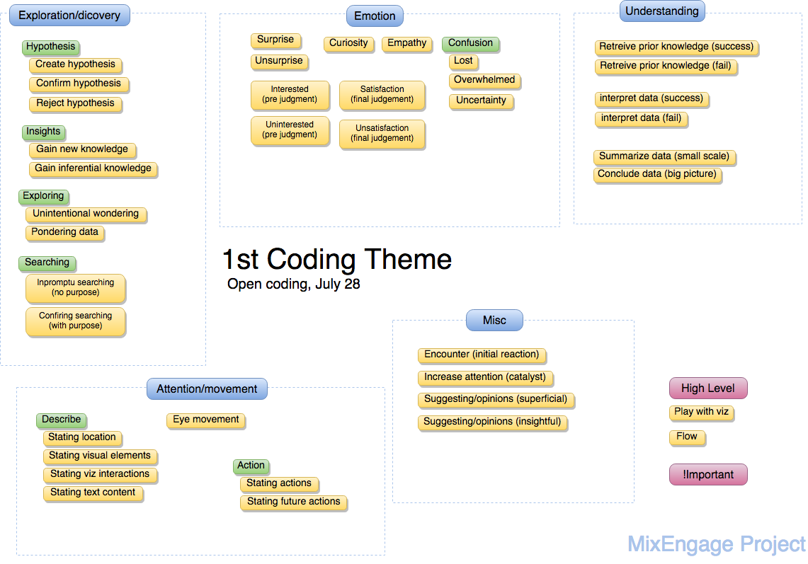
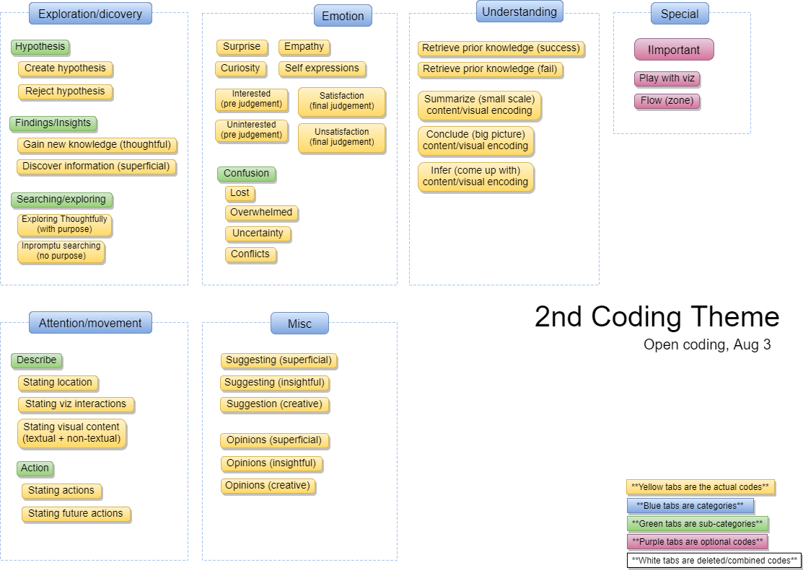
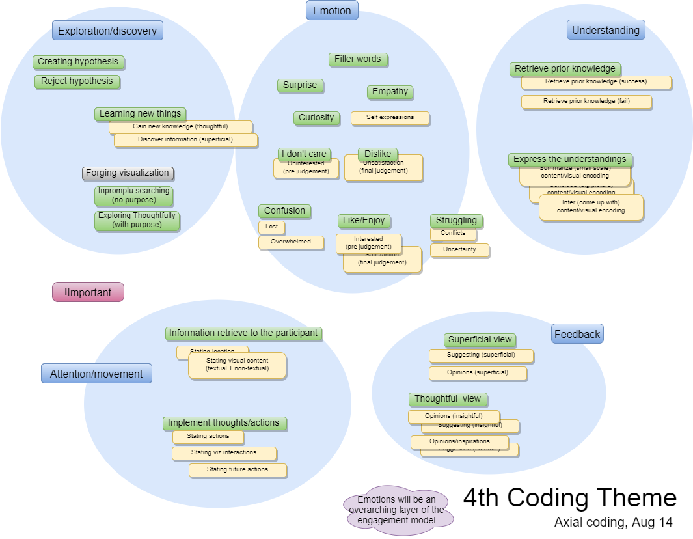

Analysis: Qualitative Coding Scheme
We selected verbal protocol data from the think-aloud sessions as our primary target of analysis. Following Strauss and orbin’s approach to grounded theory, we used three coding phases in our analysis: open, axial, and selective.




Selective Coding
During selective coding, core variables are selected and used to integrate concepts and categories so that explanations can emerge and theoretical claims can be made.
| Codes | Definition |
|---|---|
| Perception & Action | |
| Acquiring/Obtaining Information | When a subject acquire/obtain any type of information or visual representation. |
| Understanding | |
| Questioning/Assuming | When a subject assumes something (based on observations, based on previous knowledge, or just random guess), which can later be confirmed as true or false |
| Interpreting | When a subject states/explains his/her understandings on the content of visualiztion. Can be confirming or rejecting hypothesis. |
| Exploration / Discovery | |
| Pursuing (with purpose/target) | When a subject has an idea in his/her head, and searches/explores with a certain purpose; usually he/she will look for specific information/criteria |
| Orienting Attention | When a participant's attention focus has been dragged/attracted to something significantly. Including but not limited to: Retreive prior knowledge (When a subject recall something from prior knowledge); personal connections (Being or getting attached, and try to link or refer things related to him/her self) |
| Discovering | When a subject learn or notice something new from exploring (can be small pieces of information or large scale knowledge) |
| Feedback | |
| Commenting | When a subject has a view (opinion/feedback/suggestion) that he/she comes up with after proper exploring. They give refrences or rationale to what they are talking about. Or, they will demostate thier imagination or creativity in it. |
| Emotional Involvement | |
| Positive | Including but not limited to: like; enjoy; satisfied |
| Neutral (none) | Including but not limited to: Apathy; Don't care; no interest |
| Negative | Including but not limited to: Dislike; Lost; Frustrated; struggling |
| Surprise | When a subject is suprised by what visualization did or what underlying data is telling him/her |
| Curiosity | Show curiosity on issues or visual representations, maybe would ask question to him/her self |
Axial Coding
During axial coding, the aim is to relate codes so that relationships among them emerge. These connections help with identifying core variables of a phenomenon that can be pursued systematically.
| Axial coding Codes | Definition |
|---|---|
| Perception | |
| Information Extraction | When a subject acquire/obtain any type of information or visual representation. |
| Implement thoughts/actions | When a subject states what he/she is about to do and does it |
| Understanding | |
| Retrieve prior knowledge | When a subject recall something from prior knowledge (e.g., previous experience or known knowledge) |
| Express the understandings | When a subject states/explains his/her understandings on the content of visualization |
| Exploration/discovery | |
| Create hypothesis | When a subject assumes something (based on observations,based on previous knowledge, or just random guess), which can later be confirmed as true or false |
| Reject hypothesis | When a subject finds out the earlier guess was incorrect or wrong and admits/states it |
| Learning new things | When a subject learn or notice something new from exploring (can be small pieces of information or large scale knowledge) |
| Exploring Thoughtfully (with purpose) | When a subject has an idea in his/her head, and searches/explores with a certain purpose; usually he/she will look for specific information/criteria |
| Browsing (no purpose) | When a subject goes through or slims through the visual representations randomly without a clear purpose |
| Feedback | |
| Superficial view | When a subject has a view (opinion/feedback/suggestion) that he/she can't reasonably back up |
| Thoughtful view | When a subject has a view (opinion/feedback/suggestion) that he/she comes up with after proper exploring |
| Emotion | |
| Surprise | When a subject is surprised by what visualization did or what underlying data is telling him/her |
| Filler words | Filler words |
| Curiosity | Show curiosity on issues or visual representations, maybe would ask question to him/her self |
| Personal connections | Being or getting attached, and try to link or refer things related to him/her self |
| Like/Enjoy | When a subject expresses interests or positive emotions (e.g., like, enjoy, satisfy) towards of visualization |
| Apathy | When a subject shows no interest/not happy/don't like (temporarily), before making final judgment |
| Dislike | When a subject is unsatisfied/don't like or even frustrated at specific things, a final judgment |
| Confusion | When a subject express feeling of lost (e.g., have no idea what is happening) or overwhelmed |
| Struggling | When subject is having difficulties (e.g., feeling of uncertainty or conflicting) with the visualization |